Intro to OpenStreetMap
The Wikipedia of Google Maps
Created by Matthew Cengia / @mattcen
Who am I
- Computer Scientist
- Linux Systems Adminstrator
- Playing with Linux and open source since 2005
- Cyber IT Solutions (cyber.com.au)
- Computers in Prisons (PrisonPC.com)
- Scout Leader
- Mapping Hobbyist
- Excitable, enthusiastic, tin-foil-hat-wearing geek
What is OpenStreetMap?
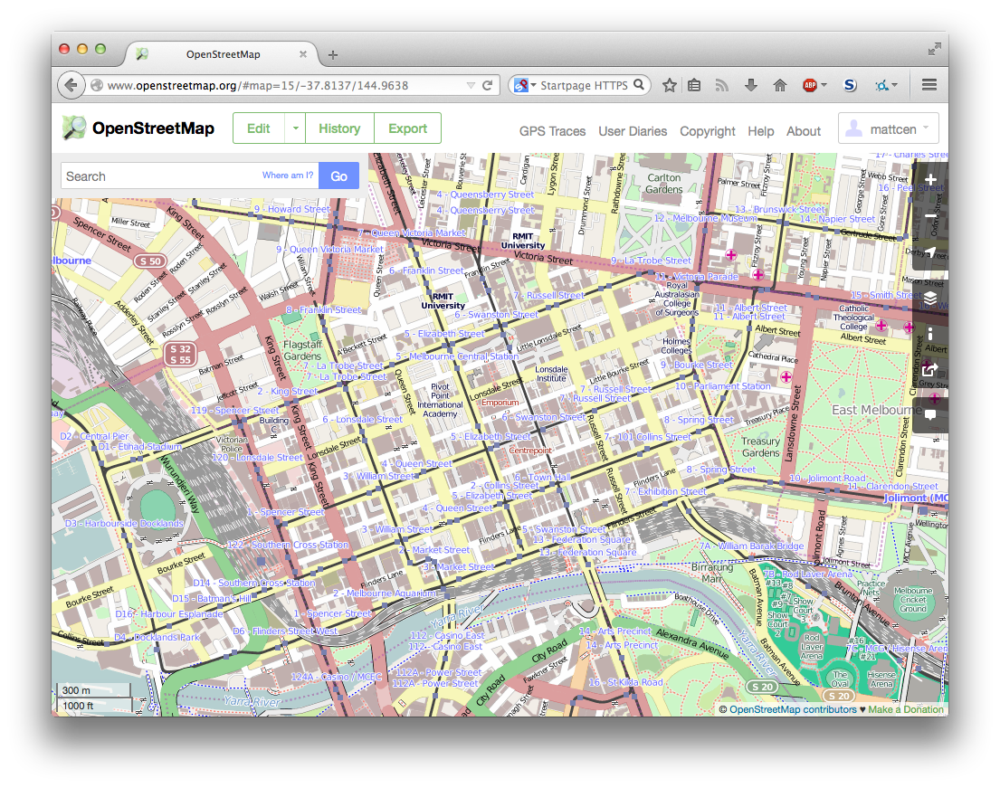(OpenStreetMap.org)
What is OpenStreetMap?
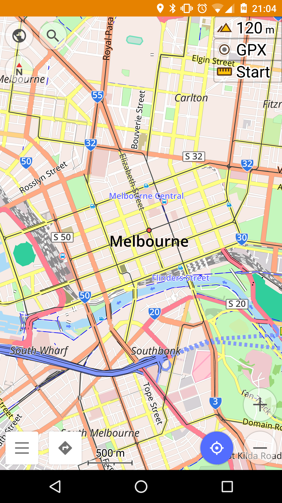(osmand.net)
What is OpenStreetMap?
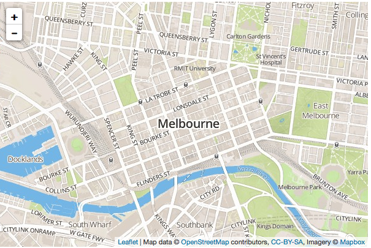(leafletjs.com, mapbox.com)
What is OpenStreetMap?
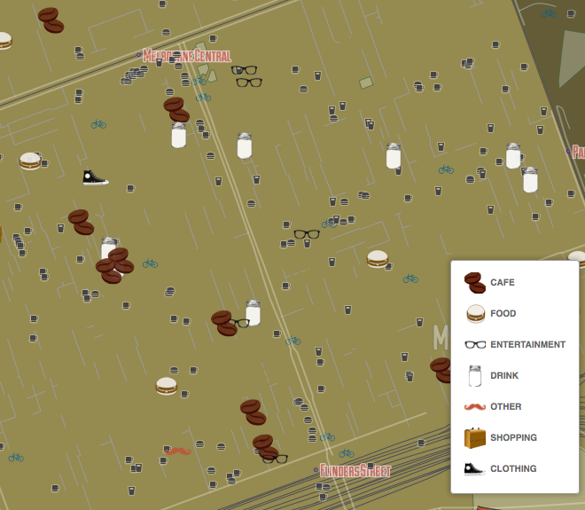(hipstermelbourne.org)
What is OpenStreetMap?
<way id="22820458" visible="true" version="6"
changeset="15666374" timestamp="2013-04-09T13:51:05Z"
user="Canley" uid="57437">
<nd ref="245537990"/>
[...]
<nd ref="245537990"/>
<tag k="addr:city" v="Melbourne"/>
<tag k="addr:housenumber" v="328"/>
<tag k="addr:postcode" v="3000"/>
<tag k="addr:street" v="Swanston Street"/>
<tag k="amenity" v="library"/>
<tag k="building" v="yes"/>
<tag k="fax" v="+61 3 96394737"/>
<tag k="landmark:name" v="No value"/>
<tag k="name" v="State Library of Victoria"/>
<tag k="name:fr" v="Bibliothèque d'État du Victoria"/>
<tag k="name:zh" v="维多利亚州立图书馆"/>
<tag k="phone" v="+61 3 86647000"/>
<tag k="website" v="http://www.slv.vic.gov.au/"/>
</way>
(OpenStreetMap.org)
Yeah... so... What is OpenStreetMap?
- https://openstreetmap.org
- Wikipedia of Google Maps
- World-wide map database
- Completely user-contributed
- Basically unrestricted use
Cool... So what can I use it for?
Anything you like!
- Trip routing
- Offline smart phone access
- Store maps on your hand-held GPS
- Custom map tiles
- Build advanced mapping websites
My local area is poorly mapped!
So fix it!
iD web-based OpenStreetMap editor
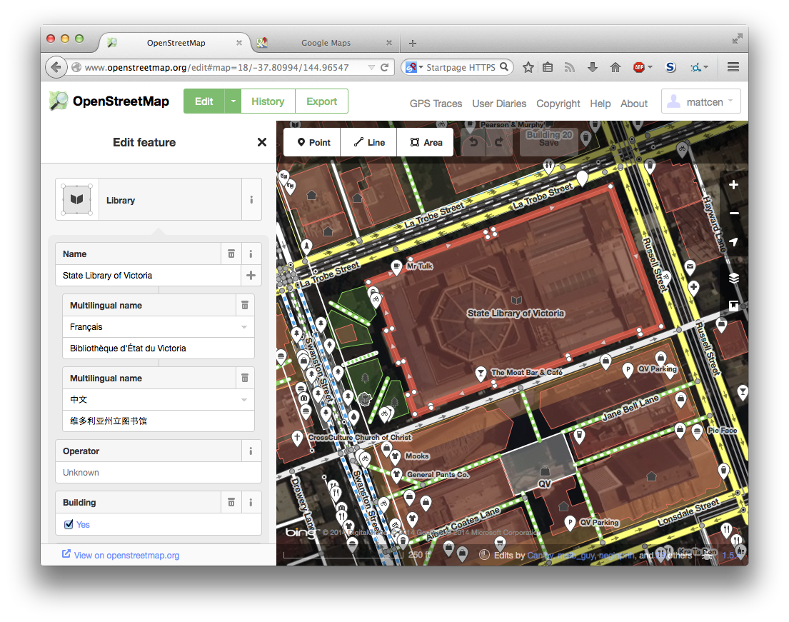Create traces on your hand-held GPS
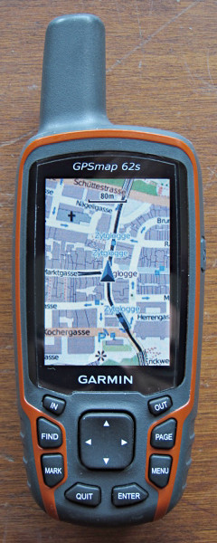(C) Shernott 2012, OpenStreetMap.org
{kind=link}
Create traces and update points on your smart phone
(osmand.net)
Update maps on paper!
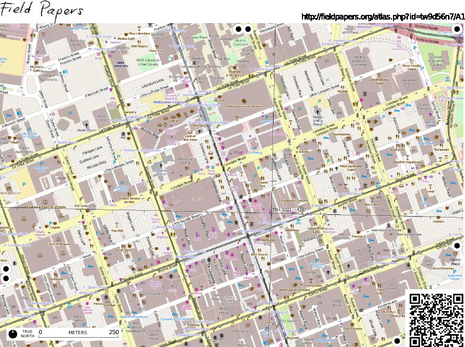Custom Tiles
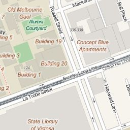 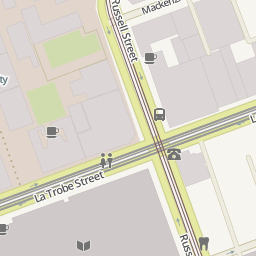 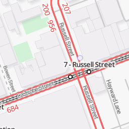 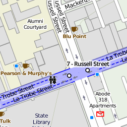 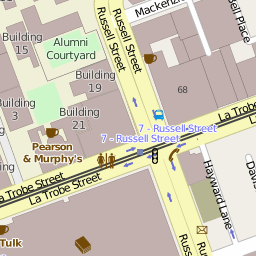 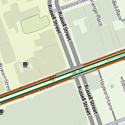Arbitrary attributes
<way id="22820458" visible="true" version="6"
changeset="15666374" timestamp="2013-04-09T13:51:05Z"
user="Canley" uid="57437">
<nd ref="245537990"/>
[...]
<nd ref="245537990"/>
<tag k="addr:city" v="Melbourne"/>
<tag k="addr:housenumber" v="328"/>
<tag k="addr:postcode" v="3000"/>
<tag k="addr:street" v="Swanston Street"/>
<tag k="amenity" v="library"/>
<tag k="building" v="yes"/>
<tag k="fax" v="+61 3 96394737"/>
<tag k="landmark:name" v="No value"/>
<tag k="name" v="State Library of Victoria"/>
<tag k="name:fr" v="Bibliothèque d'État du Victoria"/>
<tag k="name:zh" v="维多利亚州立图书馆"/>
<tag k="phone" v="+61 3 86647000"/>
<tag k="website" v="http://www.slv.vic.gov.au/"/>
</way>
What about Google Maps?
- Google tracks you
- Exporting large map segments is difficult
- Can't use it offline on your PC or smart phone
- Can't store it on your GPS
- No custom tiles
- Restrictions on usage for websites etc.
- Difficult to get edits approved
- You're basically working for Google
Demos and Questions

Intro to
OpenStreetMap by
Matthew
Cengia
is licensed under a Creative
Commons Attribution-ShareAlike 4.0 International License.
https://github.com/mattcen/sfd2014-openstreetmap